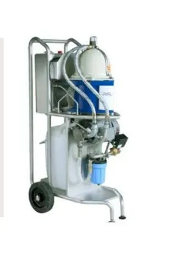

Compact, mobile separation for metal cutting coolants. Remove contaminating oils and fines down to 1 µm while extending fluid life by up to 10 years.
The Alfie 500 is a complete mobile centrifugal separation system designed to remove tramp oil, grease, and solid particles (metal fines) from machine tool coolants and wash liquids. Even at high contamination levels, it continuously cleans the fluid during bypass operation, ensuring consistent quality and performance.
With its ergonomic cart design and large wheels, the Alfie 500 can be easily moved across most workshop floors to service multiple tanks. It is a user-friendly solution that significantly reduces fluid disposal costs and improves the working environment by eliminating oil-induced bacteria and odors.

Advanced disc stack centrifuge technology captures tramp oil and solid particles as small as 1 µm, leaving the coolant pure.
Complete system including pump and PLC-based control on a mobile frame. Simply connect hoses and begin cleaning immediately.
Low power consumption and continuous operation allow for cleaning during active production cycles without interruption.
Improving your manufacturing floor:
Start saving hundreds of dollars a month on coolant disposal and replacement. Bring the Alfie 500 to your floor today.